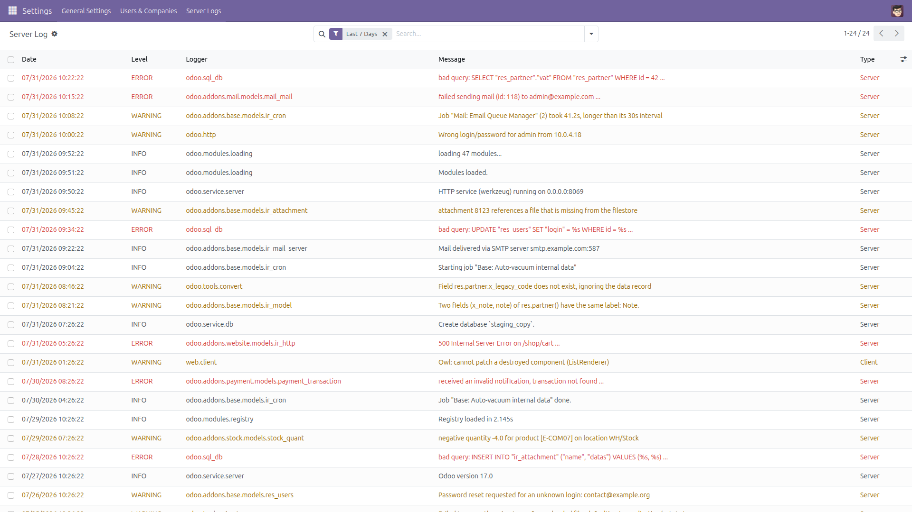
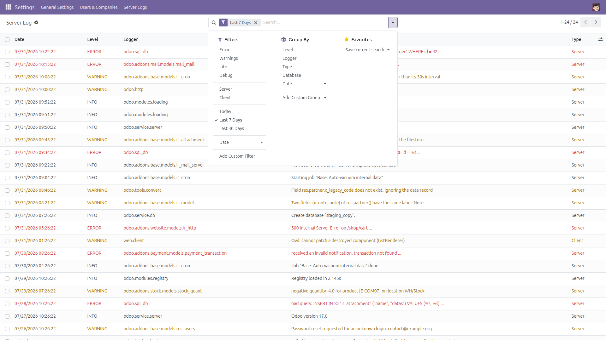
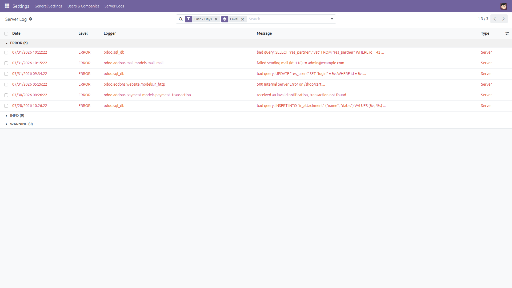
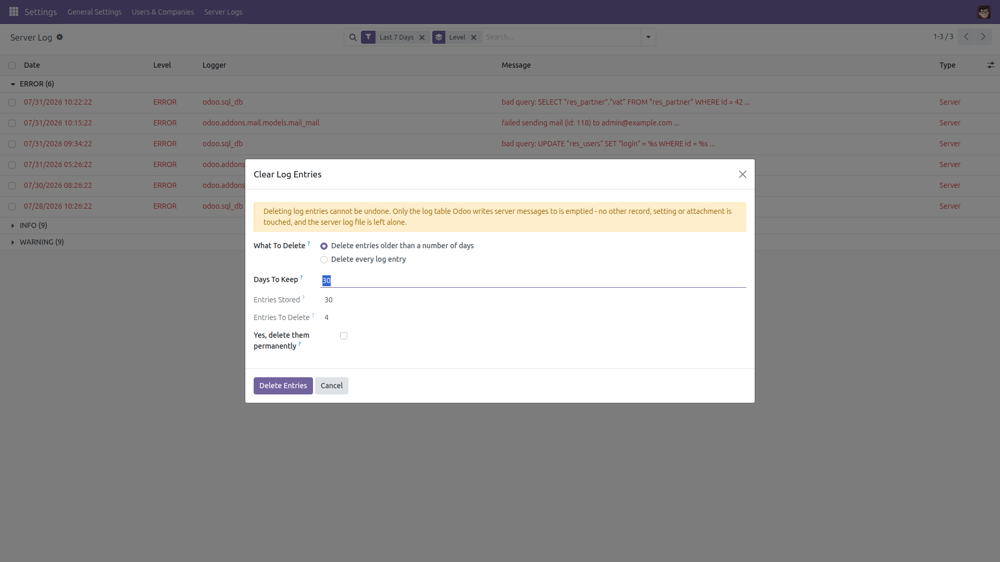
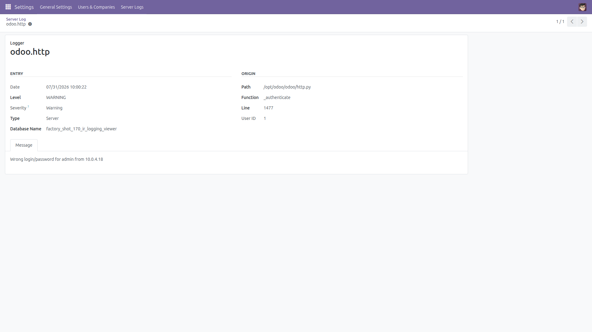
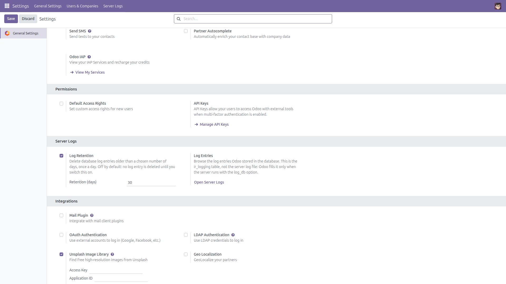

Server Log Viewer
Read the log entries Odoo stores in the database — without an SSH session
Odoo can write its log records into the database table ir_logging, but the only screen for them is a bare list buried in the Technical menu: no level filter, no date range, no free-text search, and nothing that stops the table growing forever. This module turns that table into a screen an administrator can actually work with.
Free and open source (LGPL-3), Odoo 14.0 through 19.0.
Read this first — what this module can and cannot show.
It shows only what Odoo persists to the database. Odoo writes log records into ir_logging when the server runs with the log_db option (--log-db=<database> on the command line, or log_db = <database> in odoo.conf), plus the entries written by “Execute Python Code” server actions that call log().
It is not a viewer for the server log file (--logfile), it cannot show anything logged before log_db was switched on, and on hosting where you cannot change server options the table may simply stay empty. This module never writes log entries itself.
- Filter by level — one-click Errors, Warnings, Info and Debug filters. They match both the uppercase level names the server writes and the lowercase ones a Python server action writes.
- Filter by logger — type part of a logger name (
odoo.sql_db, odoo.addons.mail…) or of the function name.
- Filter by date — Today, Last 7 Days, Last 30 Days, plus the standard month / quarter / year date picker.
- Free-text search inside the message — find an exception class, a table name or a customer reference anywhere in the message body or traceback.
- Group by level or logger — see at a glance which subsystem is producing the errors. Type and database are groupable too.
- Short in the list, complete in the form — the list shows the first line of the message, shortened; the form shows the entire message and traceback, untouched. Nothing is truncated in storage.
- Colour-coded rows — errors in red, warnings in orange, debug greyed out.
- Retention window and daily cleanup — keep the last N days and let a scheduled action drop the rest, so the table cannot grow without bound.
- Confirmed clear — a wizard that tells you how many entries it will delete and refuses to run until you tick the confirmation box.
- Administrator only — the menus, the viewer and the clear wizard are restricted to the Settings (
base.group_system) group.
Screenshots

Every log entry Odoo stored in the database, newest first, colour-coded by level with a shortened message column.

Ready-made filters: errors, warnings, info, debug, server or client, today, last 7 or 30 days — plus group by level, logger, type, database or date.

Grouped by level: how many errors, warnings and info entries there are, and which loggers produced them.

Clearing entries is opt-in: the wizard announces how many rows will go and refuses to run until the confirmation box is ticked.

The form keeps the message complete — the whole traceback is readable, together with the file, function and line that produced it.

The retention window in Settings drives a daily cleanup. It is off until you switch it on.
Installation
- Copy the module into your addons path, or install it from the Apps list.
- Open Apps, remove the “Apps” filter, search for Server Log Viewer and click Install.
- Only the standard
base_setup module is required — no other dependency.
Configuration
- Make Odoo store logs in the database. Add
log_db = <your database name> to odoo.conf (or start the server with --log-db=<database>) and restart. Without this the table stays empty and the screen has nothing to show — that is an Odoo server option, not something a module can switch on.
- Optionally add
log_db_level = warning (or error) so only the important records are stored; the default is warning.
- Go to Settings → General Settings → Server Logs and tick Delete Old Log Entries, then set Retention (days) — 30 is a sensible start. Leave it unticked and nothing is ever deleted.
- The scheduled action Server Log Viewer: apply log retention runs once a day. It is installed active, but does nothing at all while the retention setting is off.
- Access is restricted to the Settings administration group; no other user can open the screen or clear entries.
Usage
- Go to Settings → Server Logs → Log Entries. The list opens on the last 7 days, newest first.
- Click Errors to see only errors and criticals, or Warnings, Info, Debug. Combine with Today, Last 7 Days or Last 30 Days.
- Type in the search box: the first suggestion searches the message text, the second searches the logger and function name.
- Use Group By → Level or Logger to see where the noise comes from, then open a group.
- Click a row to open it: the form shows the whole message and traceback, plus the file, function and line.
- To trim the table by hand, go to Settings → Server Logs → Clear Log Entries, choose “older than N days” or “every entry”, check the count, tick the confirmation and confirm.
Notes and limitations
- Odoo already ships a minimal Logging list under Settings → Technical → Database Structure (developer mode). This module does not replace or modify it — it adds its own screen and leaves that one exactly as it was.
- Grouping by Level groups on the raw value stored by the server. A Python server action that calls
log(message, level='info') stores a lowercase value, so it forms its own group; the shipped level filters match both spellings.
- Free-text search on the message body scans the message column; on a very large log table that search is slower than the level or date filters.
- Deleting log entries is permanent. Nothing else is touched: no other record, no setting, no attachment, and never the server log file.
- Identical behaviour on every supported series (14.0 – 19.0).
License: LGPL-3 · Source on GitHub · Issues and contributions welcome.